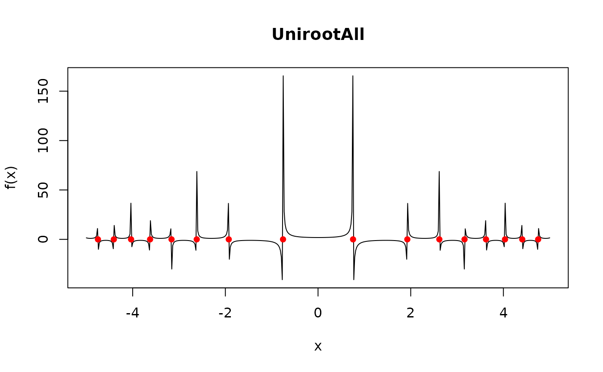

UnirootAll.RdThe function UnirootAll searches the interval from lower to upper
for several roots (i.e., zero's) of a function f with respect to
its first argument.
UnirootAll(f, interval, lower = min(interval), upper = max(interval), tol = .Machine$double.eps^0.5, maxiter = 1000, n = 100, ...)
| f | the function for which the root is sought. |
|---|---|
| interval | a vector containing the end-points of the interval to be searched for the root. |
| lower | the lower end point of the interval to be searched. |
| upper | the upper end point of the interval to be searched. |
| tol | the desired accuracy (convergence tolerance). |
| maxiter | the maximum number of iterations. |
| n | number of subintervals in which the root is sought. |
| ... | additional named or unnamed arguments to be passed to |
This is a verbatim copy from rootSolve::uniroot.all (v. 1.7).
a vector with the roots found in the interval
Karline Soetaert <karline.soetaert@nioz.nl>
f will be called as f(x, ...) for a numeric value of x.
Run demo(Jacobandroots) for an example of the use of UnirootAll
for steady-state analysis.
See also second example of gradient
This example is discussed in the book by Soetaert and Herman (2009).
uniroot for more information about input.
The function calls uniroot, the basic R-function.
It is not guaranteed that all roots will be recovered.
This will depend on n, the number of subintervals in which the
interval is divided.
If the function "touches" the X-axis (i.e. the root is a saddle point), then this root will generally not be retrieved. (but chances of this are pretty small).
Whereas unitroot passes values one at a time to the function,
UnirootAll passes a vector of values to the function.
Therefore f should be written such that it can handle a vector of values.
See last example.
## ======================================================================= ## Mathematical examples ## ======================================================================= # a well-behaved case... fun <- function (x) cos(2*x)^3 curve(fun(x), 0, 10,main = "UnirootAll")# a difficult case... f <- function (x) 1/cos(1+x^2) AA <- UnirootAll(f, c(-5, 5)) curve(f(x), -5, 5, n = 500, main = "UnirootAll")f(AA) # !!!#> [1] -19783385 10048135 -17778378 17716401 19705646 21300284 -61531208 #> [8] -52150718 -52150685 -61531329 21300313 19705621 17716401 -17778378 #> [15] 10048135 -19783436## ======================================================================= ## Vectorisation: ## ======================================================================= # from R-help Digest, Vol 130, Issue 27 # https://stat.ethz.ch/pipermail/r-help/2013-December/364799.html integrand1 <- function(x) 1/x*dnorm(x) integrand2 <- function(x) 1/(2*x-50)*dnorm(x) integrand3 <- function(x, C) 1/(x+C) res <- function(C) { integrate(integrand1, lower = 1, upper = 50)$value + integrate(integrand2, lower = 50, upper = 100)$value - integrate(integrand3, C = C, lower = 1, upper = 100)$value } # uniroot passes one value at a time to the function, so res can be used as such uniroot(res, c(1, 1000))#> $root #> [1] 837 #> #> $f.root #> [1] 0.0000000000162 #> #> $iter #> [1] 9 #> #> $init.it #> [1] NA #> #> $estim.prec #> [1] 0.000061 #># Need to vectorise the function to use UnirootAll: res <- Vectorize(res) UnirootAll(res, c(1,1000))#> [1] 837